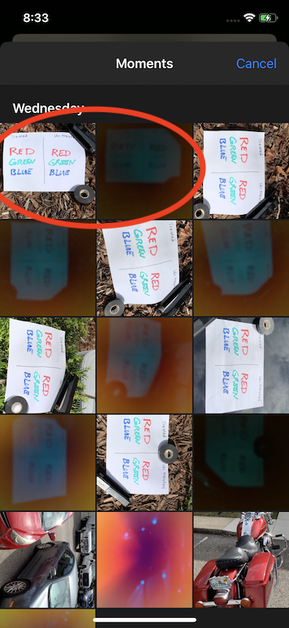

UV Camera Help
Main Menu
The main screen offers three options:
- Press "Start" to enter the camera view.
- Use the on/off switch to enable or disable "debug" mode, in which the image processing sequence is made visible by saving each step of the processing pipeline as a separate image (currently ~30 images are saved for each photograph taken).
- Click "Help" to view this webpage.
Camera Screen
By default, the camera screen will show a live video "preview" using the NFOV VIS camera.
To take an image, click the round circle button ⚫️ at the bottom of the screen. You will hear two clicks, as both the NFOV and WFOV take photos in turn.
You will then see a processed UV-enhanced image thumbnail in the upper-left corner of the screen. If you wish, you can now switch to the standard iPhone "Photos" app and examine that image in detail, or download it from the phone to your computer using any standard protocol.
You can also click the üîÅ icon to swap the "Picture-in-Picture" thumbnail with the live preview, if you prefer that arrangement.
Photo Access
To remove your saved images, use the standard "Photos" app that comes with your iPhone. This allows you to download photos to a PC using USB, send them via email, or share them to Facebook, Instagram etc.
Loading Saved Photos
While on the camera screen, instead of taking new photos, you can also load earlier "raw" images for re-processing. This allows developers to test new processing steps and parameters against old input data to see whether and how they improve the output result. This also allows new users to experiment with the program and see how it processes data even when they don't have a suitable UV sample at hand for live testing.
Note that you will be prompted to select TWO photos: both the unfiltered WFOV image, and the filtered NFOV image, which will normally be in immediate sequential order (they should have been saved at the same time, right after each other, when recorded by the software).
- Press the "Load" link at the bottom of the camera view, just below the "photo" button.
- You will be shown the phone's photo gallery. Scroll to and select the UNFILTERED (WFOV) image you wish to re-process.
- You will then be re-shown the same photo gallery. Scroll to and select the FILTERED (NFOV) image you wish to re-process, which will normally be the blurry, discoloured image immediately AFTER the unfiltered image you previously chose.
- The software will then re-process the loaded files and display (and save) the re-processed image. If "Save image components" is selected, all intermediate work artifacts involved in the processing will be saved as well.
 |
 |